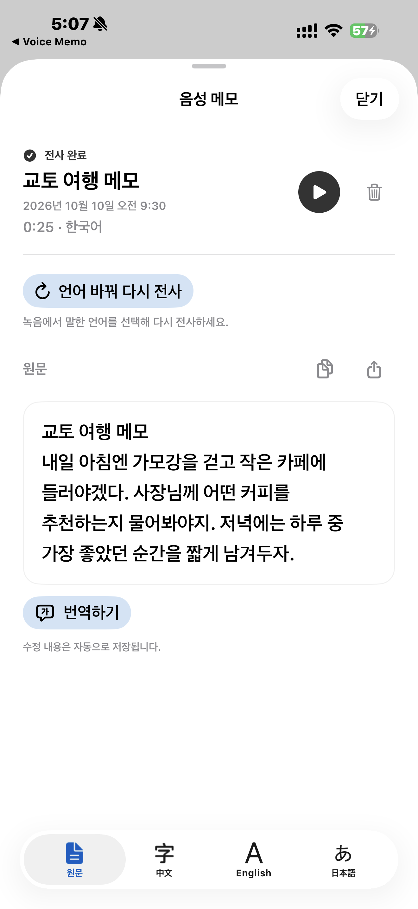
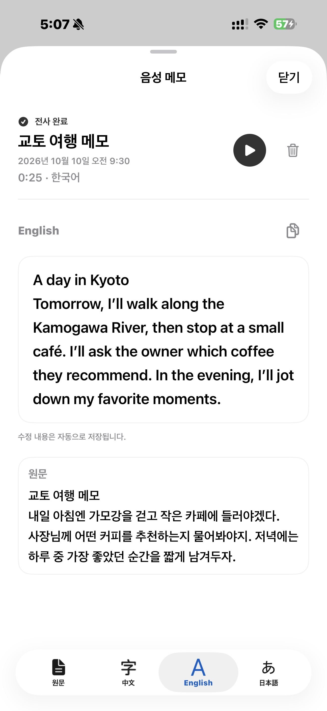

아이폰에서 한국어 음성 메모를 영어로 번역하는 법
Voice Here: Voice Notes에서 한국어로 말한 내용을 녹음하면 한국어 글로 옮긴 뒤 영어로 번역할 수 있습니다. 번역을 읽으면서 원래 녹음을 다시 들어보거나, 한국어 원문과 영어 문장을 비교해 말하기를 연습할 수 있습니다.
App Store에서 Voice Here 받기 · iPhone, iOS 26 이상
1. 한국어를 선택하고 녹음하기
음성 메모 화면에서 마이크 옆 녹음 언어를 한국어로 선택합니다. 마이크를 눌러 말하고, 끝나면 정지 버튼을 누릅니다.

2. 한국어 전사문 확인하기
녹음이 저장되면 전사가 시작됩니다. 메모의 원문에서 글로 옮겨진 내용을 확인하고, 잘못 인식된 단어를 수정합니다. 녹음 언어를 잘못 골랐다면 저장된 음성을 다시 전사할 수 있습니다.

3. 영어 번역과 원문 비교하기
설정의 번역 언어에서 영어를 선택합니다. 자동 번역이 꺼져 있거나 원문을 고쳤다면 원문 탭에서 번역하기를 누릅니다. 번역이 끝나면 English 탭에서 번역문과 한국어 원문을 비교할 수 있습니다.

한국어 “내일 아침엔 가모강을 걷고 작은 카페에 들러야겠다.”
영어 Tomorrow, I’ll walk along the Kamogawa River, then stop at a small café.
기기 내 처리 및 무료 체험
녹음·전사·번역은 iPhone에서 처리되며, 첫 사용 시 언어 데이터 다운로드에 인터넷 연결이 필요할 수 있습니다. 전사와 번역의 이용 가능 여부와 품질은 기기, 언어, 녹음 환경에 따라 달라집니다.
한국어, 중국어, 영어, 일본어를 지원합니다. 전사에 성공한 메모 다섯 건까지 무료로 체험할 수 있으며, Pro를 한 번 구매하면 기기 내 전사와 번역을 횟수 제한 없이 사용할 수 있습니다.